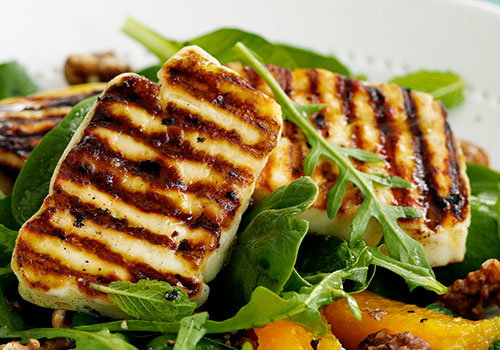

Halloumi is a Cypriot firm, brined, slightly springy white cheese, traditionally made from a mixture of goat and sheep milk, although these days cow’s milk is also used. Its texture is similar to that of mozzarella or thick feta, except that it has a strong, salty flavour imbibed from the brine preserve. Cooking the Halloumi removes all its saltiness and empowers it with a creamy texture. Halloumi is generally served during the warmer months with watermelon, due to its refreshing qualities. It is an essential part of a Cyprus Meze and many a times it is offered as an accompaniment with cold beer. The cheese also tastes lovely when grilled, pan-fried or thinly sliced on a salad.